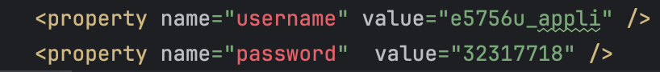
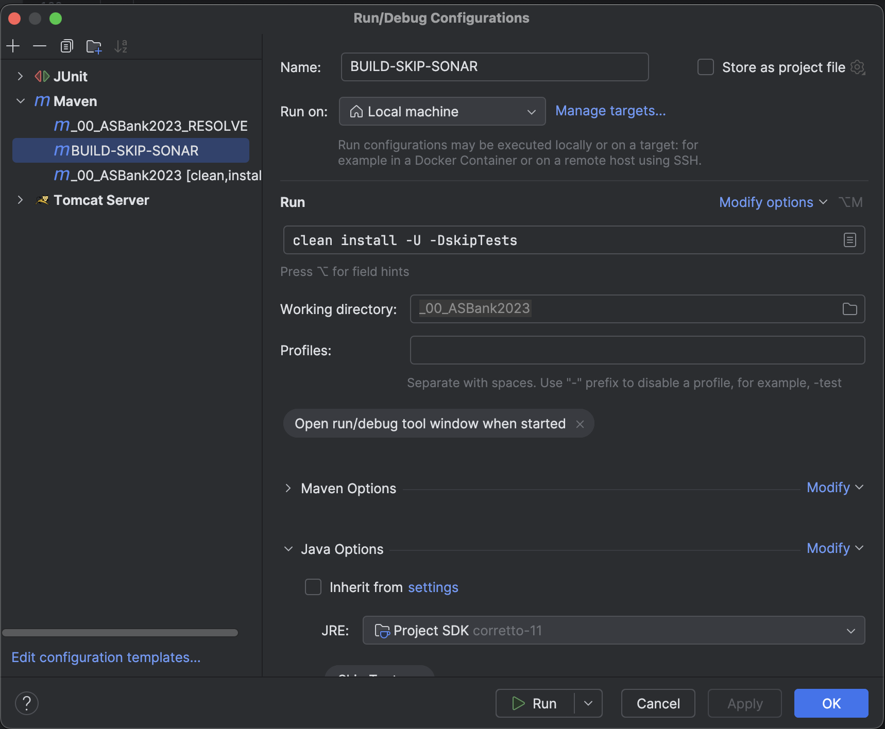

1. Installation d’IntelliJ IDEA :

2. Installation du Projet :

3. Installation du JDK 11 :


4. Installation de Tomcat 9 :

5. Configuration du Serveur Tomcat :

6. Installation de XAMPP :

7. PHP MY ADMIN :

8. Création de la base de données :

9. Création des tables :
Accéder au dossier de scripts du projet
Intégrer le code des scripts sur php-my-admin

10. Connexion entre la base de données et l'application :
Accéder au fichier de configuration :
Mise à jour des informations de connexion :
Remplacez le nom d'utilisateur et le mot de passe par ceux utilisés lors de la création de la base de données.
Modifiez l'URL pour y intégrer le nom de la base de données que vous avez créée.

11. Importation et Déploiement sur Tomcat :


12. Modification du Tomcat9 :
13. Lancement de l'application en local :

14. Lancement de l'application sur le réseau de l'IUT :
14.1 Connexion au réseau internet de l'IUT :
Entrez votre identifiant universitaire et votre mot de passe, par exemple :
e6447u suivi de : @etu.univ-lorraine.fr
14.2 Installer le VPN Cisco AnyConnect sur MAC OS :
Accédez à la page suivante pour obtenir les instructions :
Cliquez iciEnsuite, cliquez sur le lien vpn.univ-lorraine.fr, qui vous redirigera vers cette page :
Sur cette page, vous devrez saisir votre identifiant universitaire suivi de @etu et votre mot de passe.
Le processus d'installation démarrera automatiquement.
14.3 Saisir le domaine :
14.4 Création de la base de données sur le réseau de l'IUT avec ajout d'un identifiant et d'un mot de passe :
14. Création de la base données test :
14.1 Dans edit configuration
Aller dans Build-Skip-Sonar et supprimer le -DskipTests
14.2 Création de la base de donnée test
Répétez les étapes décrites aux points 7, 8 et 9, en sélectionnant cette fois-ci le script de la base de données de test.
15. Lancement des tests :
15.1 Utilisation de Maven
Utilisez Maven a la place de Tomcat pour exécuter les tests.